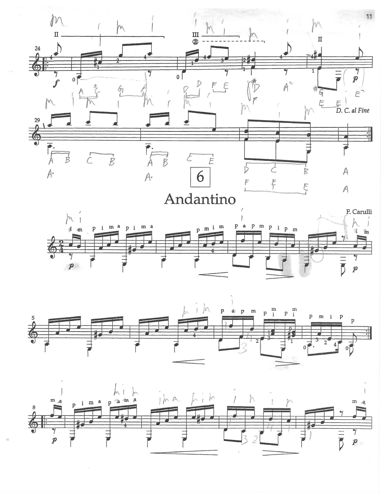

The end of the Waltz, a new piece — and one new rule for every week from now on
Page 11 of the folder · the tail of No. 5, Waltz (bars 24–32) and then No. 6, Andantino · F. Carulli · 2/4
One page, two pieces. The top two lines are the last of the Waltz — the piece from last lesson — finishing on D. C. al Fine. Then the boxed 6, and the Andantino starts.
How we know which piece it is. No guesswork this time: at 7:13 Teacher Bowen says it straight out — “All right, number six.” — and the homework at the end is “practise and learn the whole thing of six.”
And set it to the eighth note, not the beat: “this is going to be your eighth notes” (04:32). In 2/4 that means two clicks per beat, four per bar — so every note of a run has a click of its own and there is nowhere to rush.
He then played the whole piece through with it, twice, before letting Jason try.
Tap any highlighted line to jump to what Teacher Bowen said about it. He worked down the page in order, so the numbers follow the lesson.

The line opens with a repeat sign and ends at D. C. al Fine. He wants the repeat left out: play it once, then straight back to the top of the piece. He also asked for it a little louder — the line is marked f.
Then again from “the F, D and F” (01:29) — the note names Jason has pencilled under this line. They ran these two bars perhaps a dozen times before moving on.
This is the whole technical point of the piece. The printed p i m a over the first bars is not a suggestion: in an arpeggio each right-hand finger takes one note and then gets out of the way, so no finger plays twice in a row. When Jason got it, the comment was simply “nice slide” (11:14).
The same note, twice, a few minutes apart: the accidental in this line is the one that keeps getting played natural. The other instruction here was “keep all the fingers” (16:20) — once a left-hand shape is down, leave it down rather than lifting and replacing it for every note.
Same pattern, new bass note, and the long note gets its full two beats — which is exactly what the metronome is for. One more correction on the way through: “two different fingers” (18:08).
The lesson finished with the verdict that Jason is doing pretty well so far, and a mention of a recital coming up.